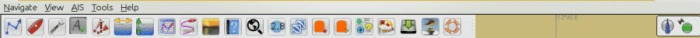
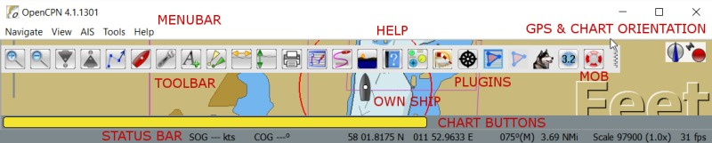

The Menu Bar is a good aid to find features and shortcuts, and works best if you already is a bit familiar with OpenCPN. This page contains links that explains the different features.
The Menu Bar, when visible, is situated just under the Title Bar and above the default position of the Tool Bar. See Below. It contains access to features, as well as help with available shortcuts, also called hot keys.

The Menu Bar can be activated in two ways.
It can be on all the time by ticking Options→User Interface → Show Menu Bar.
If this choice is not on, the Menu Bar can be shown temporarily by using the hot-key “Alt”.
As soon as the screen is used, for example by panning or double clicking for an Object Query, the Menu Bar disappears.

As seen above the Menubar consists of five entries.
Shortcut Keys When a menubar item is visible, the characters shown on the right of the items are “hints” to remind user of the shortcut key to use when the menu is closed. While the menu is open, this key may be inactive. The key to use is the first character of the item itself. This may be platform dependent.
Alt + underlined letter, opens the concerned sub-menu. Alt+N will open “Navigate”. The exact behavior is platform dependent. For example Alt+A will open the Ais menu on Windows. Linux requires Alt and then Alt+A.